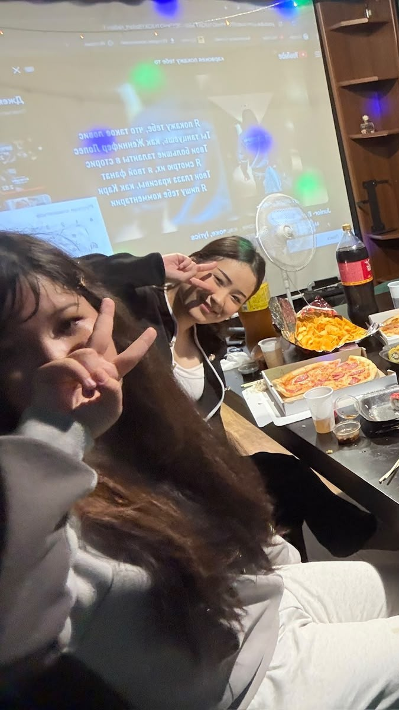
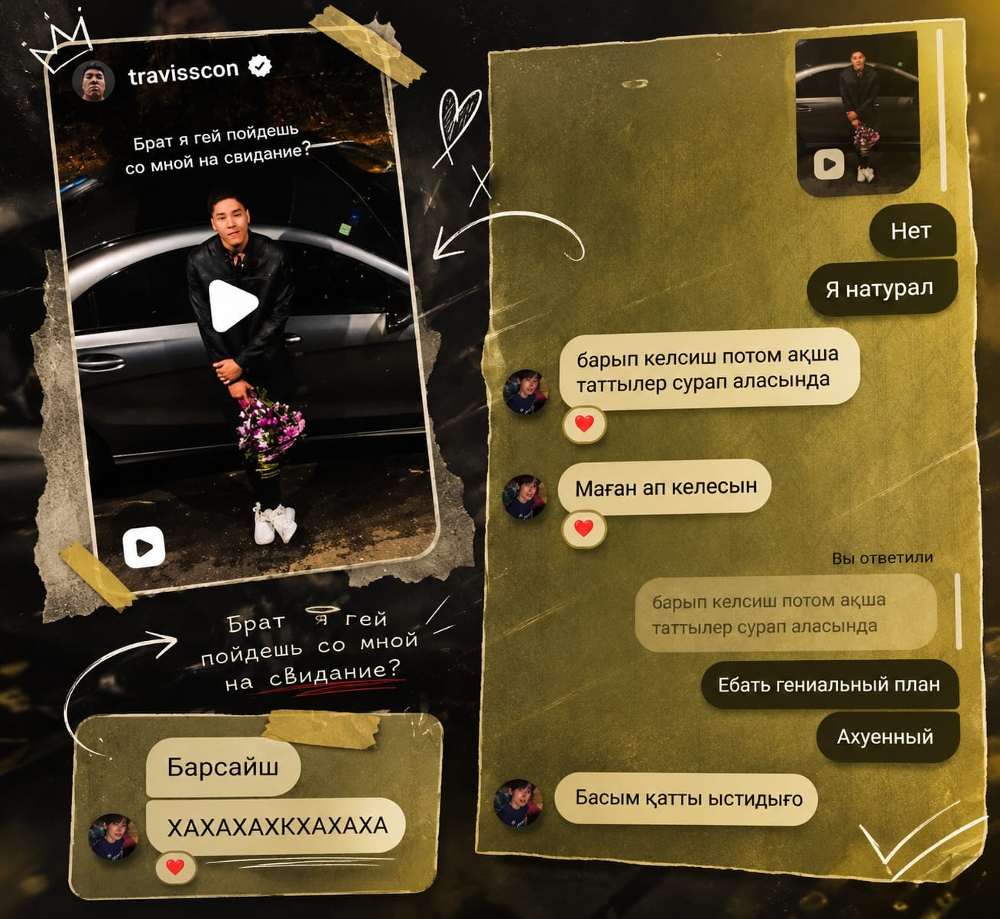
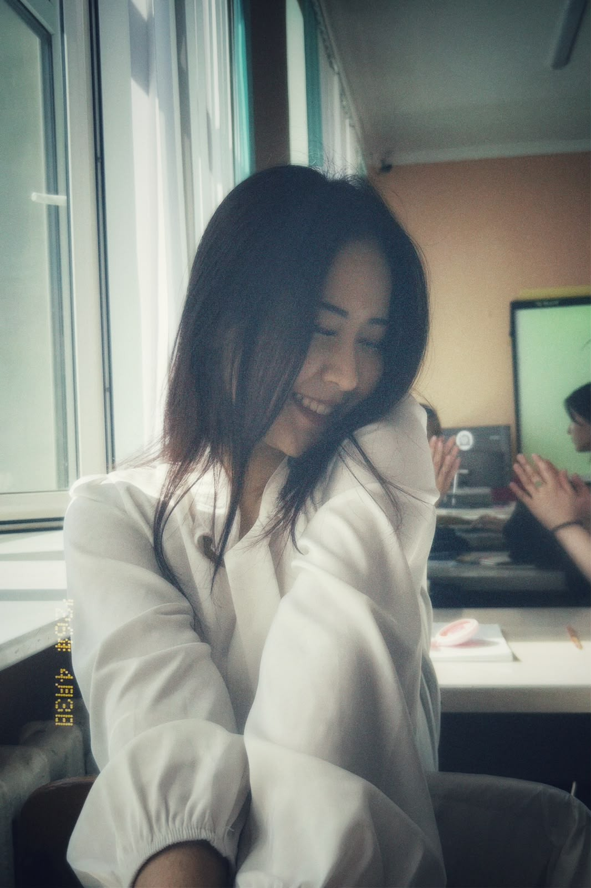
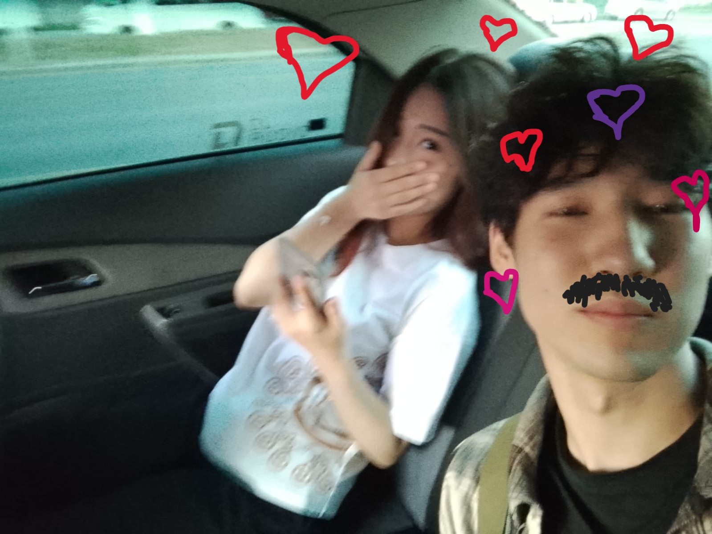
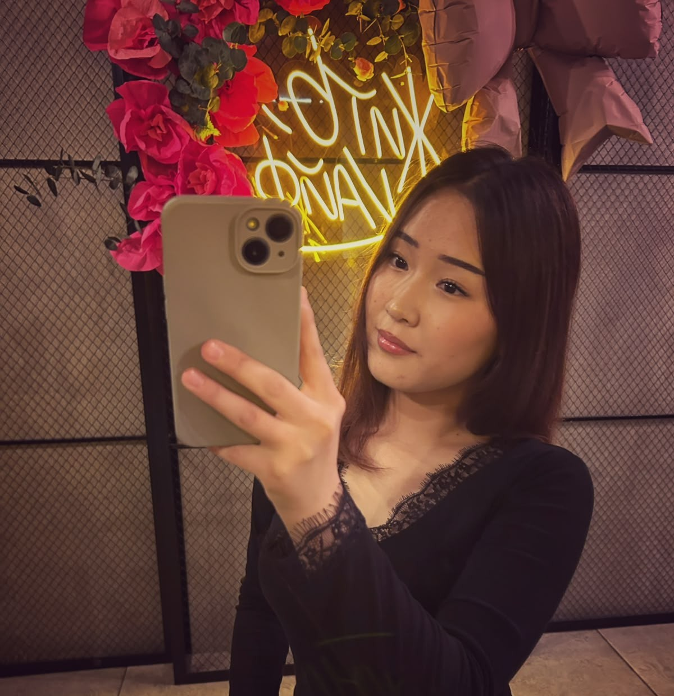

С этого всё началось.

Я не знал, что один день может изменить всё.

Я люблю эти моменты.

Даже в самых простых днях с тобой было тепло.

Твой смех — это то, что я узнаю из тысячи.

Хочу, чтобы таких воспоминаний было намного больше.

Рядом с тобой время идёт иначе.

Ты сделала обычные места особенными.

Некоторые кадры хочется хранить вечно.

Спасибо, что ты появилась в моей жизни.
И это только начало.
Я хочу создавать с тобой ещё много таких воспоминаний.
❤